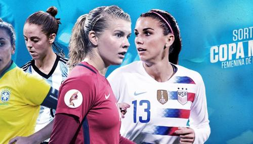

Sandy Yomara Bautista Jimenez 6to secre
FutBol Femenil
como se basa el fut
El fútbol femenino es el fútbol practicado entre mujeres, y es el deporte de equipo más practicado por las mujeres en todo el mundo. Esta variante se ha vuelto popular en varios países, y es una de las pocas disciplinas deportivas femeninas con ligas profesionales en ese ámbito y a lo largo de los años se ha ido desarrollando y popularizando en todo el mundo, tanto es así que muchas organizaciones importantes promocionan este deporte de manera activa.
REGLAS DEL FÚTBOL FEMENINO
El fútbol femenino al igual que todos los deportes tiene sus reglas y estas deben cumplirse para evitar sanciones en el campo de juego. El juego es controlado por un árbitro que a su vez es ayudado por dos jueces de línea. La primera regla expresa que deben haber 11 jugadoras, 10 en el campo y 1 arquera, el terreno debe ser de grama natural, sintética o de tierra, sin embargo en partidos internacionales no está permitido que sea de tierra.
Vestuario y duración del juego
Según el reglamento el juego está conformado por dos tiempos de 45 minutos cada uno y un intervalo de descanso de 15 minutos como mínimo. Cada equipo debe tener un uniforme diferente al del contrincante y a su vez las arqueras deben vestir diferente al resto de las jugadoras, normalmente cada equipo tiene dos uniformes de diferentes colores a elegir en caso de que el contrincante tenga alguno con los mismos colores. Cada jugadora debe llevar además canilleras y las porteras deben usar guantes.
Faltas y sanciones
Básicamente el juego consiste en conseguir el mayor número de goles posible, impulsando la pelota con todas las partes del cuerpo a excepción de las extremidades superiores. Solo en el saque lateral se pueden utilizar las manos, a excepción de la portera que es la única jugadora que puede agarrar la pelota con sus manos durante el partido. Cada jugador ocupa una posición y tiene una función determinada dentro del equipo. En función del sistema de juego utilizado estas posiciones van variando durante el transcurso del partido.
La regla del “fuera de juego” indica que un jugador no puede entrar en el juego sí, no siendo poseedor de la pelota y estando más adelantado a la posición de la misma, entre el jugador y la línea de meta contraria no hay como mínimo dos adversarios, incluyendo al portero, Hay dos tipos fundamentales de faltas o infracciones, según la gravedad de las mismas, entre estas están: derribar o golpear a un contrario, tocar la pelota con las manos, obstruir deliberadamente a un contrario, jugar de forma peligrosa para la integridad física del adversario, entre otras.
Las falta directas son las que permiten realizar un disparo directo a gol, la falta directa cometida dentro del área de portería propia se sanciona con lanzamiento penal, tiro directo desde el punto situado a 11m de la portería. Al contrario, las falas indirectas no permiten el disparo directo a la portería.
En este aspecto cabe destacar que la mera intención de cometer una falta, en caso de golpe o derribo al contrincante ya es suficiente para señalización de la misma. Por este tipo de faltas se sanciona a la jugadora con una tarjeta amarilla, si la falta se produce en reiteradas ocasiones y es sancionada la misma jugadora dos veces con tarjeta amarilla automáticamente esta se convierte en roja, esta tarjeta causa la expulsión de la jugadora del campo del juego durante el resto del partido.
Las sanciones son realizadas a criterio del árbitro según la magnitud de las falta, si se considera una falta muy grave el árbitro puede sancionar directamente con tarjeta roja
COMPETICIONES
Campeonato de Europa Femenino de la UEFA
En 1937, el equipo Dick, Kerr's ladies jugó con las Edimburgh Ladies en el "Campeonato de Gran Bretaña y el Mundo", siendo el primer partido internacional de fútbol femenino. Sin embargo, no existió una competición internacional de fútbol femenino hasta 1982 en el que el primer "Campeonato Europeo para Equipos Representativos de Mujeres" de la UEFA fue lanzado, siendo que la primera final de 1984 fue ganada por el equipo de Suecia. A esta competición le siguió el Campeonato Femenino de la UEFA, conocido también como Euro Femenino. En 1987, Noruega ganó dicho campeonato y en las siguientes ediciones hubo un absoluto dominio de la Selección femenina de fútbol de Alemania en siete de las ocho posteriores ediciones, siendo su último título el obtenido en el año 2009.
REGLAS DEL FUTBOL FEMENINO
PRIMEROS MUNDIALES FEMENINOS
En 1970V, se organizó el primer partido internacional de fútbol femenino en Italia, a donde acudieron selecciones representantes de varios países por invitación.[cita requerida] Las primeras competiciones internacional no contaban con el reconocimiento de la FIFA, de modo que se celebraron extraoficialmente. El primer mundial femenino de 1970 fue ganado por Dinamarca, que se impuso por
al seleccionado de Italia. En el segundo mundial, celebrado en México en 1971, el equipo mexicano se impuso a las selecciones de Argentina, Inglaterra e Italia y se enfrentó en la final a Dinamarca. El encuentro se llevó a cabo en la Ciudad de México ante un récord de asistencia para un encuentro de fútbol femenino, que hasta la fecha no se ha superado en ese país.11 El resultado final fue de 3-0 a favor de Dinamarca. Desde ese campeonato se festeja en Argentina el Día de la Futbolista cada 21 de agosto, en recuerdo de la victoria de su selección frente a Inglaterra por 4 a 1.1213 Los 4 goles fueron convertidos por Elba Selva.141516
A pesar del éxito y la gran expectación creada por estos primeros mundiales femeninos, la desorganización de las federaciones locales hizo que se perdiera la continuidad en los torneos y no fue hasta dos décadas después, ya con el abierto respaldo de la FIFA (que reconoció oficialmente el fútbol femenino en 1980),17 cuando se organizó la primera Copa Mundial Femenina de Fútbol con reconocimiento oficial
PROXIMOS TORNEOS DE FUTBOL FEMENINO EN GUATEMALA
Premundial Sub-20 de la Concacaf 2020
La selección nacional sub-20 será la primera en salir a la acción con el Campeonato Femenino Sub-20 Concacaf 2020. El evento se celebrará del 22 de febrero al 8 de marzo en República Dominicana. Aquí te contamos cómo será su participación: Guatemala en el Premundial Sub-20. Premundial Sub-17 de la Concacaf 2020
Del 18 de abril al 3 de mayo será el turno para el combinado Sub-17, que buscará su clasificación a la Copa Mundial Sub-17 de la FIFA de India 2020. El Campeonato Femenino de la Concacaf se estará disputando en Toluca, México, en el que Guatemala fue ubicado en el grupo C junto a Cuba, El Salvador y Estados Unidos. Torneo Femenino Centroamericano Sub-15 2020
Las jóvenes promesas del fútbol femenino guatemalteco también tendrán la oportunidad de demostrar su talento ante las mejores de la región con la celebración del Torneo Centroamericano Sub-15, el cual se llevará a cabo del 12 al 17 de junio en Costa Rica.
Torneo Interclubes Femenino 2020
Los equipos de la Liga Nacional de Guatemala también tendrán la oportunidad de competir a nivel internacional con la disputa del Torneo Interclubes UNCAF 2020, al que asisten los campeones de cada una de las ligas en Centroamérica. En el caso de Guatemala, el representante será el equipo que resulte ganador del actual Torneo Clausura.
La competencia de clubes se celebrará del 7 al 12 de septiembre en Panamá. La última vez que un conjunto guatemalteco se proclamó campeón fue en el 2018, cuando Unifut-Rosal levantó el título.
